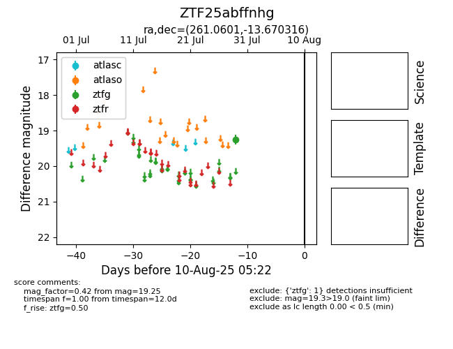

Target ZTF25abffnhg at 2025-08-05 23:02, see:
FINK: fink-portal.org/ZTF25abffnhg
Lasair: lasair-ztf.lsst.ac.uk/objects/ZTF25abffnhg
ALeRCE: alerce.online/object/ZTF25abffnhg
alt names
ZTF25abffnhg (ztf,fink)
coordinates:
equatorial (ra, dec) = (261.0601,-13.67032)
galactic (l, b) = (10.3683,+12.32034)
photometry
last ztfg=19.25
1 ztfg detections
